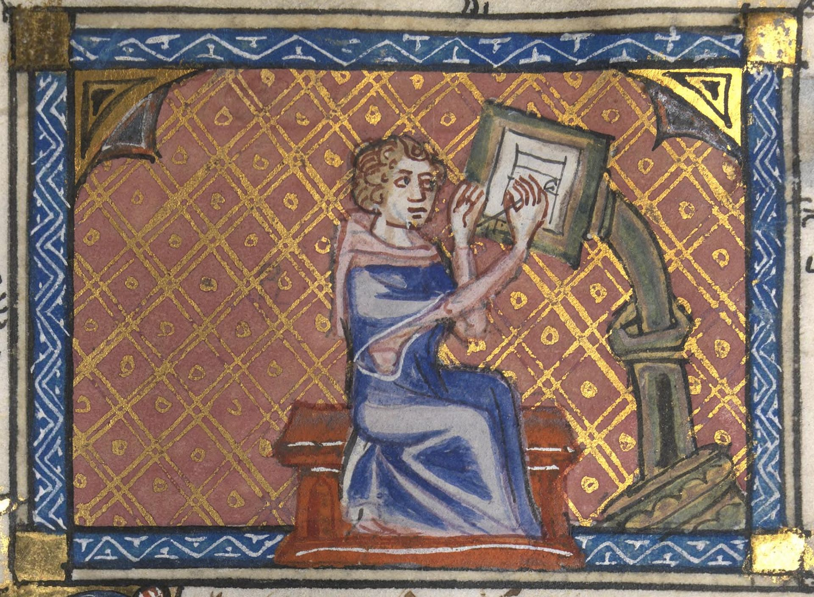
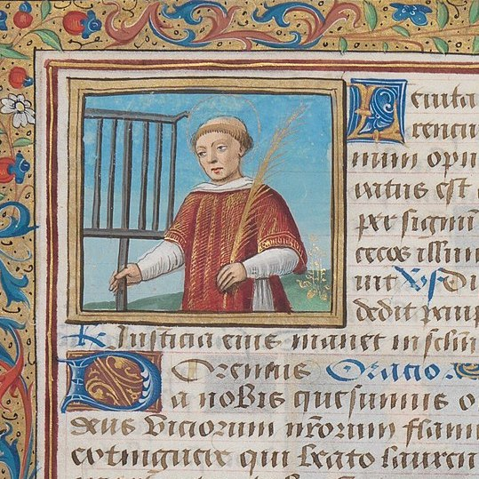
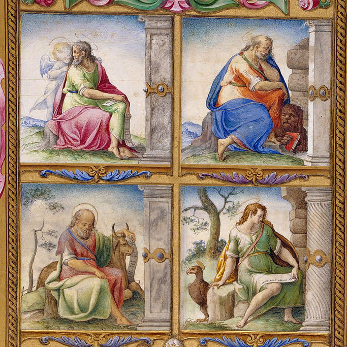
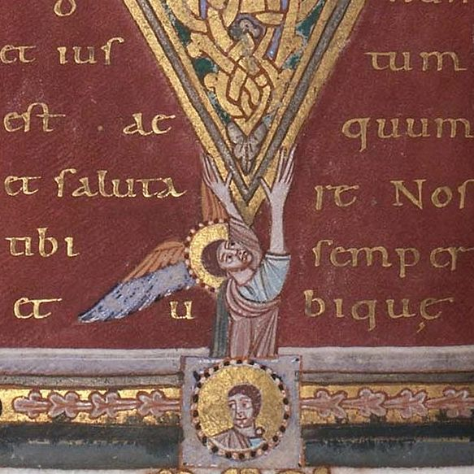
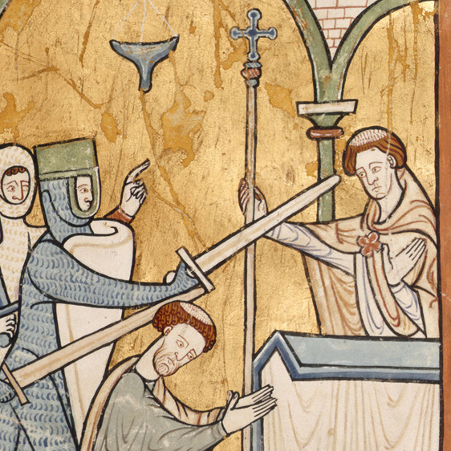

Illuminated Manuscripts
The charming, timeless art form of medieval Christendom.

Illuminated Manuscripts...

Draw the reader into contemplation.

Help clarify theological teachings with symbolism.

Ornament and beautify sacred objects.

Help bring sacred history to life.
Matchless epoch, in which an ingenuous people was formed in beauty without even realizing it, just as the perfect religious ought to pray without knowing that he is praying; in which Doctors and image-makers lovingly taught the poor, and the poor delighted in their teaching, because they were all of the same royal race, born of water and the Spirit!
- Jacques Maritain
Want to learn more?
Sign up for our newsletter!